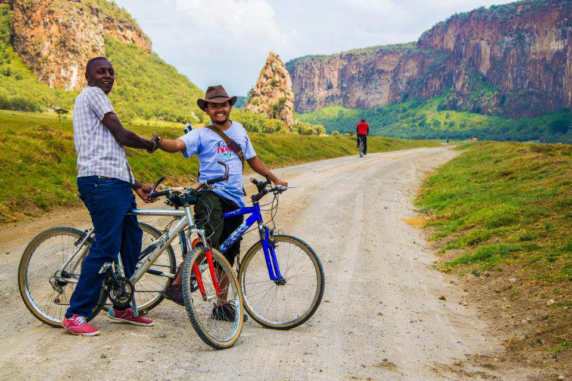
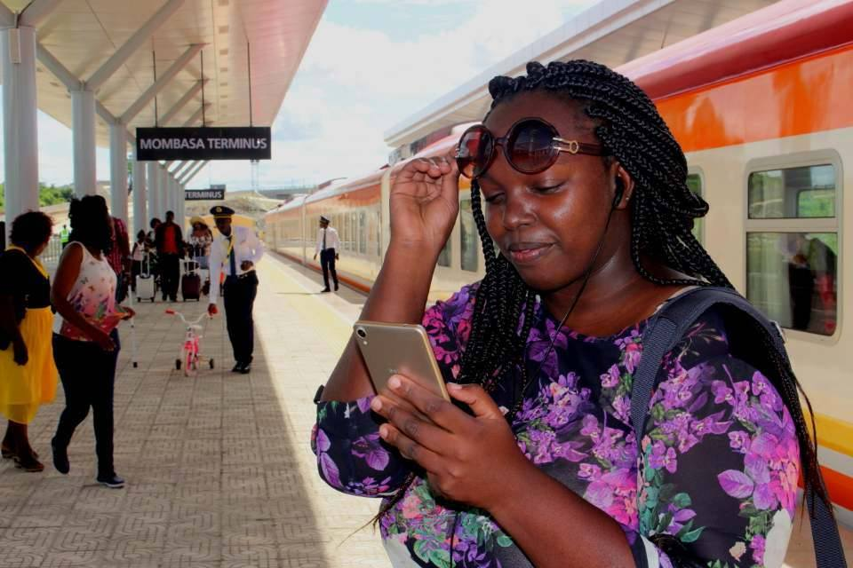
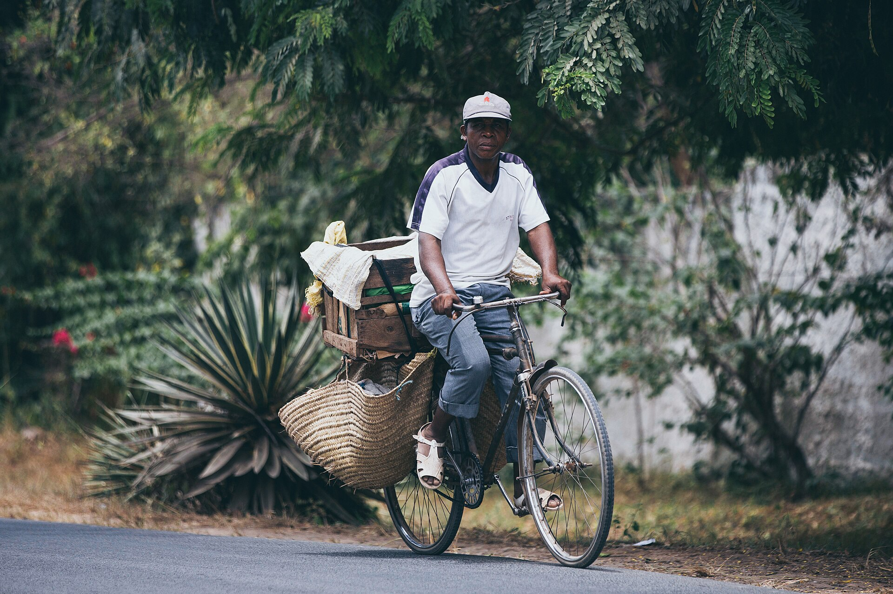

Rift Valley & savannen
Vi starter i Nairobi og reiser vestover og ned i den store Riftdalen — by og kultur, aktive dager på sykkel og til fots, og til slutt selve safari-drømmen i Masai Mara. Ni netter med action og dyreliv før vi vender mot havet.
Del 1 av 3 · 9 netter
Nairobi
Vi lander om morgenen og lar Afrika synke inn. Elefantunger som mates med flaske på Sheldrick (åpent bare én time midt på dagen), giraffer som spiser av hånda vår på Giraffe Centre, dans og kultur på Bomas of Kenya, og et yrende marked. En rolig start før eventyret virkelig begynner.

Hell's Gate på sykkel
Vi setter opp base ved Lake Naivasha i fire netter — ingen pakking mellom hver dag. Første høydepunkt: vi sykler — ja, på egen sykkel! — rett blant sebra, giraff og bøffel i Hell's Gate, parken som inspirerte Løvenes konge. Vi vandrer inn i det dramatiske juvet under Fischer's Tower og kjøler oss i varme kilder.

Båt & Crescent Island
Vi tar båt ut på Naivasha-sjøen blant flodhester og fiskeørn, og går i land på Crescent Island — en privat vilt-øy helt uten rovdyr, der vi kan spasere til fots midt blant sebra, giraff, gnu og antiloper. En av de få stedene i Kenya der barna trygt kan gå tett innpå de store gresseterne.

Lake Nakuru
En kort dagstur til nabosjøen Nakuru, kjent for tusenvis av rosa flamingoer langs bredden og et av Kenyas beste steder for å se både hvite og svarte neshorn. Giraffer mot vulkankratere og dyreliv rundt hver sving — en forsmak på safarien som venter.

Masai Mara
Den lange, vakre veien inn (5–6 timer) tar oss til turens hjerte. Vi bor i en privat conservancy like utenfor selve reservatet — som gir oss ro, stjernehimmel og muligheter reservatet forbyr: gåsafari og nattkjøring. Vi lar første kveld gå rolig og sparer kreftene til den store dagen.

Ballong ved soloppgang
Selve høydepunktet. Vi står opp i mørket og løfter oss opp i en varmluftsballong idet sola bryter over savannen — en time i stillhet over løver, elefanter og endeløse sletter, før champagne-frokost i gresset. Samme dag: en full game drive inne i selve reservatet. Hele safari-dosen samlet i én storslått dag.

Maasai-landsbyen
Vi besøker en ekte Maasai-landsby og møter menneskene som har levd side om side med savannens dyr i århundrer — hoppedansen, husene av leire, kveget og fortellingene. En dag på beina i conservancy-området (uten reserve-avgift) før vi vender nesa tilbake mot Nairobi og togsporet.
Toget gjennom Tsavo
Vi bytter savanne mot skinner og tar Kenyas moderne lyntog sørover inn i Tsavo — landet med de berømte røde elefantene — og sover to netter i en lodge på stylter rett over et yrende vannhull.
Del 2 av 3 · 2 netter
Madaraka Express
Vi går ombord i Madaraka Express, det glinsende lyntoget som suser fra Nairobi mot kysten. Fra vinduet ruller savannen forbi — og med litt flaks får vi øye på elefanter og giraffer fra togvinduet. Vi går av i Voi, midt i Tsavo, klare for to netter i villmarken.

Salt Lick & de røde elefantene
Salt Lick Lodge står på høye stylter rett over et vannhull — dyra kommer til oss mens vi spiser middag, og vi sovner til lyden av elefanter under rommet. Vi ser Tsavos berømte støvrøde elefanter, og på Mzima Springs kan vi se flodhest og krokodille gjennom et undervanns-vindu. Én full dag i Tsavo er akkurat nok.
Det indiske hav
Turens store belønning: åtte netter ved Det indiske havs varme, turkise vann. Først Watamus rolige laguner og swahili-kultur i nord, så mils lange palmestrender på Diani i sør — snorkling, delfiner, aper og late dager.
Del 3 av 3 · 8 netter
Watamu
Første møte med havet. Vi snorkler på grunne, rolige rev i Watamu marinepark, og besøker Local Ocean Conservation — et redningssenter for havskilpadder der tenåringene får ta aktivt del i ekte naturvern. Kritthvite laguner, varmt vann og en avslappet swahili-stemning.

Gede & jungelen
Inne i skogen ligger Gede — en rik swahili-by som jungelen slukte for 400 år siden, nå med gangbroer oppe i tretoppene og aper i grenene. Vi kombinerer med Arabuko-Sokoke-skogen (sjeldne fugler og aper) eller en solnedgangskajakk i Mida Creek gjennom mangroven.

Diani strand
Turens finale: mils lange, palmekantede strender med kritthvit sand. Vi svømmer med delfiner og snorkler i Kisite marinepark, ser sjeldne Colobus-aper svinge i trærne, prøver kitesurf — og tar oss endelig råd til å gjøre absolutt ingenting. En rolig bufferdag på slutten gir rom for vær og en siste utflukt før SGR-toget tar oss tilbake til Nairobi og flyet hjem.